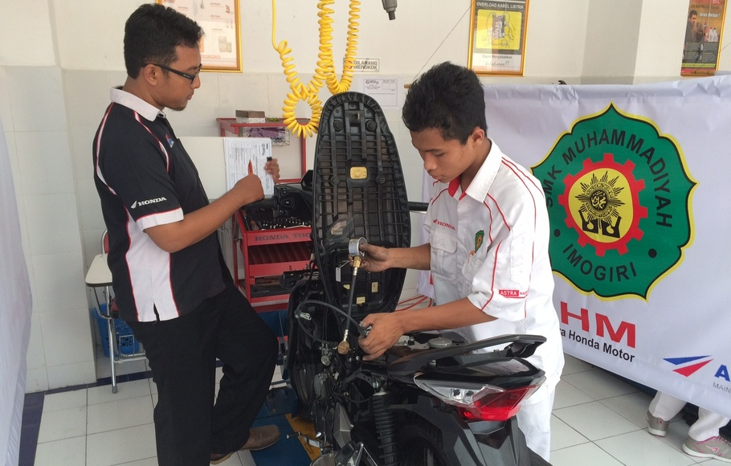

JAKARTA, KOMPAS.com –PT Astra Honda Motor (AHM), agen tunggal pemegang merek Honda di Indonesia akan masuk ke sekolah sekolah, khususnya sekolah menengah kejuruan (SMK) di beberapa kota besar di Tanah Air. Lo, mau jualan untuk memenuhi target! Mereka ingin meningkatkan kualitas pendidikan di bidang otomotif, khususnya kendaraan roda dua.
Program ini merupakan salah satu bentuk perwujudan corporate social responsibility (CSR) AHM di bidang pendidikan. Menurut Head of Corporate Communication PT AHM Kristanto, untuk tahap awal ini pihaknya menunjuk Jakarta dan Bandung untuk mengembangkan laboratorium otomotif Honda dengan menggandeng dealer utama di kedua kota tersebut (PT Daya Adira Mustika, Jabar) dan PT Wahana Makmur Sejati, Jakarta dan Tangerang) sebagai pelaksana.
Banyak hal menarik dari karya Delessu, tapi tidak diungkapkan secara detail bagian per bagian. Detail itu misalnya soal bagian depan dengan suspensi tunggal yang juga dipasangi semacam peredam. Uniknya, pegangan suspensi atau peredam itu bertumpu pada penutup roda dan posisinya pun rebah (sejajar dengan jalan).
AHM telah menyediakan 12 unit sepeda motor sebagai sarana untuk praktik di laboratorium untuk para siswa SMK yang terpilih, terutama terkait dengan pemberian materi pelatihan ketrampilan seputar roda dua terhadap para guru dan instruktur di setiap sekolah.
"Kami memilih SMK karena dianggap mampu menghasilkan lulusan yang siap kerja. Kementrian pendidikan Nasional melalui direktorat Pendidikan Menengah Kejuruan sedang gencar mempromosikan SMK sebagai alternatif pendidikan tingkat menengah," urai Kristanto, dalam rilisnya yang diterima Kompas.com hari ini (26/11/2010). Menurutnya, tahun ini AHM sudah mendonasikan 54 unit kendaraan ke-31 SMK dan Balai Latihan Kerja yang tersebar di berbagai kota.